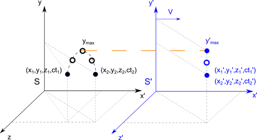

Albert Einstein
14 March 1879 – 18 April 1955
Creator of: Special Relativity Theory
Time dilatation
Let's say we have two systems S and S'. The system S' is moving at a speed Vx in relation to the system S. Observer in the each systems is going to define position of the moving object. Object in S' system is moving up and then is falls down. The starting position is (x1',y1' ,z1',ct1'),after object get to the maximum top position (y'max) he falls down to the end position (x2',y2',z2',ct2'). From system S perspective starting and ending position is set by Lorentz transformation:
\begin{equation} x_{1} = \frac{x_{1}' + vt_{1}'}{\sqrt{1-\frac{v^{2}}{c^{2}}}} \quad x_{2} = \frac{x_{2}' + vt_{2}'}{\sqrt{1-\frac{v^{2}}{c^{2}}}} \end{equation}
Taking into account the sequence of events:
$$ t_{2}' > t_{1}'$$
From here we get:
$$ x_{2}' > x_{1}'$$
This result is interpreted as from S system observer see object going up in place x1 and falling dow in another place x2,what is show on the picture.
When is going to time of the events, they transform according to Lorentz transformation:
\begin{equation} t_{1} = \frac{t_{1}' + x_{1}'\frac{v}{c^{2}}}{\sqrt{1-\frac{v^{2}}{c^{2}}}} \quad t_{2} = \frac{t_{2}' + x_{2}'\frac{v}{c^{2}}}{\sqrt{1-\frac{v^{2}}{c^{2}}}} \end{equation}
To compare durations of the event in both systems we simply subtract time t2 from time t1:
$$ \Delta t = t_{2} - t_{1} = \frac{t_{2}' + x_{2}'\frac{v}{c^{2}} - t_{1}' - x_{1}'\frac{v}{c^{2}}}{\sqrt{1-\frac{v^{2}}{c^{2}}}}$$
After reduction we finally get equation for time dilatation:
\begin{equation} \Delta t = \frac{t_{2}' - t_{1}'}{\sqrt{1-\frac{v^{2}}{c^{2}}}} = \frac{\Delta t'}{\sqrt{1-\frac{v^{2}}{c^{2}}}}\end{equation}
Time dilatation example
Let say you stand next to the road observing autos. After one of them is passing you with speed of 120 km/h you have been wondering how much time those people save. In this case you staying in S system, and the people are moving with car in the S' system. Now we will compare flow of time in your surroundings t and in the car surroundings t':
$$V = 120 \frac{km}{h} = \frac{1}{30} \frac{km}{s} \quad ; \quad c = 3 \cdot 10^{5} \frac{km}{s}$$
$$ \Delta t = \frac{\Delta t'}{\sqrt{1-\frac{(\frac{1}{30})^{2}}{(3 \cdot 10^{5})^{2}}}} = \frac{\Delta t'}{\sqrt{1-\frac{1}{81} \cdot 10^{-12}}} \approx \frac{\Delta t'}{0.9999999999999938}$$
$$ \Rightarrow \Delta t > \Delta t' $$
The score says that your time is flowing faster than for people in car. If you spend entire life (80 years) in car moving with speed 100 km/h, then you save amount of time equals to:
$$ \Delta t' = 80 years = 2522880000 s \Rightarrow \Delta t = 2522880000.0000157 s$$
$$saved \quad time = \Delta t - \Delta t' = 0.0000157 s $$
Like you see this it's almost nothing. To make difference you need to move with a fraction of the speed of light. Let's assume that you are moving with half of light speed (0.5c). In this case to simplicity our calculations we set speed of light equals to 1 (c = 1). Then you save much more time:
$$ \Delta t = \frac{\Delta t'}{\sqrt{1-\frac{(\frac{1}{2})^{2}}{(1)^{2}}}} = \frac{\Delta t'}{\sqrt{1-\frac{1}{4}}} = \Delta t' \cdot \frac{2}{\sqrt{3}}$$
When we again are moving with this speed for 80 years then we save time equals to:
$$ \Delta t' = 80 years = 2522880000 s \Rightarrow \Delta t = 2913170894.2662463 s$$
$$saved \quad time = \Delta t - \Delta t' = 390290894.2662463s \approx 12.4 years $$
That means when we go back from space mowing with 0.5 speed of light to earth, then we will have 80 years but people on earth will be 92.4 years old. This is the real travel to the future!